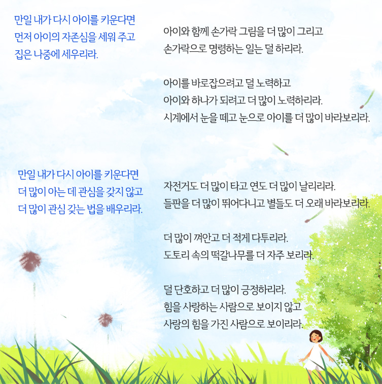

1회기 자녀 이해하기
2회기 자녀의 자율성 키우기
3회기 자녀와 갈등 해결하기
4회기 자녀의 힘을 북돋우기

4회기 자녀의 힘을 북돋우기
- 시작
하기 - 첫째
좌절극복사례 - 둘째
힘북돋아주기 - 셋째
장점찾기 - 정리
하기
TIP. 내가 만약 아이를 키운다면...
'힘을 사랑하는 사람'이 아니라 '사랑의 힘을 가진 사람'으로 성장할 수 있도록 지혜를 얻는 글을 읽고 음미하는 시간을 가져보도록 하겠습니다.
- 내가 만약 아이를 키운다면... - 다이애나 루먼스

만일 내가 다시 아이를 키운다면
먼저 아이의 자존심을 세워 주고
집은 나중에 세우리라.
아이와 함께 손가락 그림을 더 많이 그리고
손가락으로 명령하는 일는 덜 하리라.
아이를 바로잡으려고 덜 노력하고
아이와 하나가 되려고 더 많이 노력하리라.
시계에서 눈을 떼고 눈으로 아이를 더 많이 바라보리라.
만일 내가 다시 아이를 키운다면
더 많이 아는 데 관심을 갖지 않고
더 많이 관심 갖는 법을 배우리라.
자전거도 더 많이 타고 연도 더 많이 날리리라.
들판을 더 많이 뛰어다니고 별들도 더 오래 바라보리라.
더 많이 껴안고 더 적게 다투리라.
도토리 속의 떡갈나무를 더 자주 보리라.
덜 단호하고 더 많이 긍정하리라.
힘을 사랑하는 사람으로 보이지 않고
사랑의 힘을 가진 사람으로 보이리라.